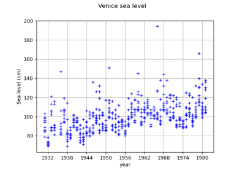
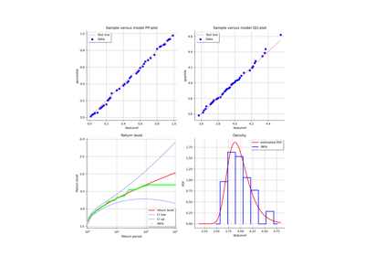
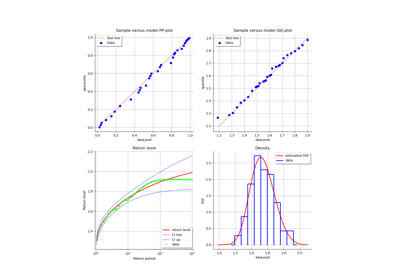

GeneralizedExtremeValueValidation¶
- class GeneralizedExtremeValueValidation(*args)¶
Validation of GeneralizedExtremeValue inference.
Warning
This class is experimental and likely to be modified in future releases. To use it, import the
openturns.experimentalsubmodule.- Parameters:
- result
DistributionFactoryResult Inference result to validate.
- sample2-d sequence of float
Data on which the inference was performed.
- result
See also
GeneralizedExtremeValueFactory
Methods
Draw the 4 usual diagnostic plots.
drawPDF()Draw the estimated density and the data histogram.
Draw the return level with confidence interval.
Accessor to the object's name.
Confidence level accessor.
getId()Accessor to the object's id.
getName()Accessor to the object's name.
Accessor to the object's shadowed id.
Accessor to the object's visibility state.
hasName()Test if the object is named.
Test if the object has a distinguishable name.
setConfidenceLevel(confidenceLevel)Confidence level accessor.
setName(name)Accessor to the object's name.
setShadowedId(id)Accessor to the object's shadowed id.
setVisibility(visible)Accessor to the object's visibility state.
- __init__(*args)¶
- drawDiagnosticPlot()¶
Draw the 4 usual diagnostic plots.
The 4 graphs are the probability-probability plot, the quantile-quantile plot, the return level plot, the data histogram with the fitted model density.
If
 denotes the ordered block maximum data and
denotes the ordered block maximum data and  the cumulated density function of the GEV distribution fitted on the data, the graphs are defined as follows.
the cumulated density function of the GEV distribution fitted on the data, the graphs are defined as follows.The probability-probability plot consists of the points:
![\left\{ \left( i/(n+1), \hat{G}(z_{(i)}) \right), i=1, \dots , m\right\}]()
The quantile-quantile plot consists of the points:
![\left\{ \left( z_{(i)}, \hat{G}^{-1}(i/(n+1)) \right), i=1, \dots , n\right\}]()
The return level plot consists of the points:

and the points:
![\left\{ \left( m, z_{m}^{emp}\right), m> 0\right\}]()
where
 is the empirical
is the empirical  -block return level and
-block return level and  the
-block return level calculated with the fitted GEV.
the
-block return level calculated with the fitted GEV.- Returns:
- grid
GridLayout - Returns a grid of 4 graphs:
the QQ-plot,
the PP-plot,
the return level graph (with confidence lines),
the density graph.
- grid
- drawPDF()¶
Draw the estimated density and the data histogram.
- Returns:
- graph
Graph The estimated density and the data histogram.
- graph
- drawReturnLevel()¶
Draw the return level with confidence interval.
The return level plot consists of the points:
and the points:
where
is the empirical -block return level and the
-block return level calculated with the fitted GEV.- Returns:
- graph
Graph The return level graph.
- graph
- getClassName()¶
Accessor to the object’s name.
- Returns:
- class_namestr
The object class name (object.__class__.__name__).
- getConfidenceLevel()¶
Confidence level accessor.
- Returns:
- levelfloat
Confidence level for the confidence lines.
- getId()¶
Accessor to the object’s id.
- Returns:
- idint
Internal unique identifier.
- getName()¶
Accessor to the object’s name.
- Returns:
- namestr
The name of the object.
- getShadowedId()¶
Accessor to the object’s shadowed id.
- Returns:
- idint
Internal unique identifier.
- getVisibility()¶
Accessor to the object’s visibility state.
- Returns:
- visiblebool
Visibility flag.
- hasName()¶
Test if the object is named.
- Returns:
- hasNamebool
True if the name is not empty.
- hasVisibleName()¶
Test if the object has a distinguishable name.
- Returns:
- hasVisibleNamebool
True if the name is not empty and not the default one.
- setConfidenceLevel(confidenceLevel)¶
Confidence level accessor.
- Parameters:
- levelfloat
Confidence level for the confidence lines.
- setName(name)¶
Accessor to the object’s name.
- Parameters:
- namestr
The name of the object.
- setShadowedId(id)¶
Accessor to the object’s shadowed id.
- Parameters:
- idint
Internal unique identifier.
- setVisibility(visible)¶
Accessor to the object’s visibility state.
- Parameters:
- visiblebool
Visibility flag.
Examples using the class¶

Estimate a GEV on the Venice sea-levels data

Estimate a GEV on the Port Pirie sea-levels data

Estimate a GEV on the Fremantle sea-levels data